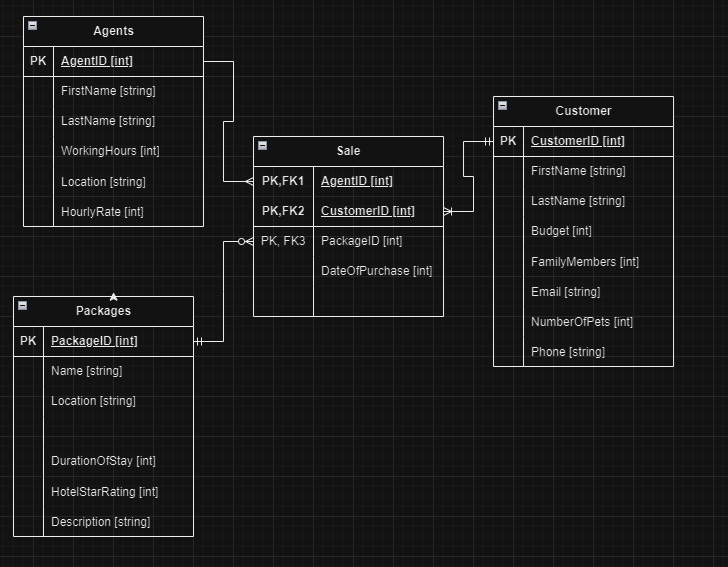
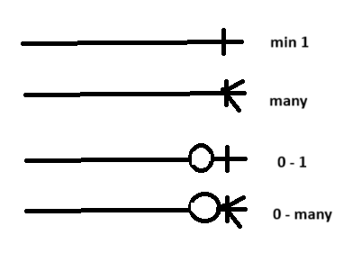

A collection of data & info organized into tables
with columns and rows.
Situation description has nouns, verbs, and modifiers.
Every table should have a unique id.
Table Types:
NN : Not Null.
ND : No Duplicates.
PK : Primary Key.
FK : Foreign Key.
Cardinality: Can describe relationships
(ie. 1 to many, many to many, etc.).
Cardinality can also be used in the POST-DEVELOPMENT
to say how many
entries a table has.
(ie. Player1, Player2, Player3 = cardinality of 3)
Degrees : Can be described as how many ATTRIBUTES
an entry in a database
table has. (ie. First, Last, Phone, Email = 4 degrees)
RDBMS : Relational Database Management System.
Conditions for a table in a database:
- Table name is unique.
- Each column within the table has a unique name.
- Order of columns is irrelevant.
- All rows of the table have the same format.
- No two rows in a table are identical.
Primary Keys :
- If it is a Many To One notation / relationship, then
the the ONE attribute
must be a unique key.
Every table must have a primary key.
Primary keys must not be null, must never be duplicated.
Multi-column primary key cans have duplicates in each
single column,
never in all columns combined.
Primary keys must never be changed, for example a user
can never change
their email, but they can delete it and remake it, or
make a new email all together.
Modifiers/Attributes: A field in a table.
Individual data items that
describe their Entities. ie. a Student's name
would be an Attribute of
that student. ie. Size of an item, quantity on
hand of said item.
Noun: Identify the things we need to keep info about.
Verbs: Show how these things relate to or interact
with each other.
Entity: Name of table including all fields.
Body: Record.
Relation : Is connection between two tables.
UA : User Assigned
SA : System Assigned
Primary Key: Unique ID of a table.
Foreign Key: The unique id of another table,
but can be unique.
Composite Key: Usually has many - to - many
relationships. These are a
few fields that when put together would be a
unique value that no one
else could have , and you're able to query the
database with this composite key.
Say if there was no unique key , you can combine
multiple fields of keys to make a unique an entry.
Table Rules:
1. Table names must be unique.
2. Column names must be unique within a table.
3. Rows must be unique.
4. Columns must be non-decomposable. Should be as
small as possible
(ie. Name should be split in firstName and lastName)
5. Columns and Rows can be in any order.
Relationship details:
1:1 The entity and object can only have 1 relationship.
ie. License plate can only be assigned to one car,
and a car can only be
assigned to one license plate.
1:M Entity one can have many relationships with
an object that can only
have 1 relationship with entity / vice versa.
ie. A student can have
M:M Entity and Object may both have multiple relationships.
ie. A Purchase order can have multiple items, and
Users can have multiple Purchases.
Entity Relationship Diagram (erd)

Travel Agency ERD:

Normalization: is the steps/rules/practice
to reduce redundancy and null values.
NF (stand for Normal Form)

Developed by DR. E.F. Codd from IBM in 1970.
A progressive refinement of database structures.
Transforms complex data structures into simple data structs.
To minimize redundant data.
Minimize NULL values.
Enable Extensions without needing major redesign.
minimize modification anomalies.
Make queries easier and less limited.
The main goal of this normalization is basically to seperate
a table from including too much data, and to split it down
amongst other smaller tables.
As De-Normalization is the process of adding say some
"redundant" data to another table of the database,
because it may be easier to retrieve from there, instead of
having to do 2 queries for example. So you should know when
to use normalization, and when are the times you should
de-normalize. It is up to you as the designer to come
up with the routing and proper data structures
that should be implemented.
Three main forms of normalization:
First Normal Form: No repeating columns. Primary key
must be unique.
Second Normal Form: Every non key column identified by
the entire primary key. (this comes into effect when we
have a multi-column primary key)
Third Normal Form: Every non key column depends on only
the primary key.
If a non-key column is uniquely identified by another
non-key column it should be moved to a table that is
keyed by that column.
What is an Entity Relationship Diagram
A map of a database that shows all the relationships
between the different tables inside the database.
- A variety of formats.
- No single industry standard to create an ERD.
- Each company will have its own standard
depending on the tool they use.
You can use Draw.IO or Microsoft Visio to create an ERD.
ER Diagram Attributes:
- Listed below Entity name.
# : Unique identifier.
* : Mandatory attribute.
o : Optional attribute.
example:
Product Table = {
#* SKU, (must be unique, and is mandatory)
ProductName,
0 Description Name,
}
Common naming conventions used in ERD.
#* Must be Unique, and is mandatory.
1 (can only have 1 of this
(ie, only 1 emergency contact) and is required)
0-1 (is optional to choose)
1-M OR 1-* (must have atleast 1) (same as below)
Entity relationship symbols :
Crowfoot = Many
|Dash = 1 Mandatory
0 = zero / optional
0 |Dash = Can have 0 to 1
0 Crowfoot = can have 0 to many

Bridging:
1st Normalization Form
1NF - No repeating columns.
Process of breaking down tables into multiple
smaller tables to reduce redundancy.
2nd Normalization Form
2NF - To move data into the other smaller
tables where they should belong. It should
be directly associated with
their Entity / Table (this usually happens
automatically when you're doing the first
normalization form.)
This comes into effect when we have a
multi-column primary key.
3rd Normalization Form
3NF - To have attributes only in their
corresponding Entity table, and then use
bridging/connections and primary
key's to access their data.
By modeling to the 3rd NF you have added
more tables and reduced nulls and data
redundancy.
Using 0 is represented that an attribute
is optional.
minValue...maxValue (ie. 1...10) another
form of entity relationship notations
instead of crowfoot.
If a bridging table has a 1 to many
relationship with it's bridged tables,
the children tables mostly likely
have a many-to-many relationship.
SQL / SEQUEL
Statements/Function of SQL:
SELECT (Select whole or specific attribute/field.)
Retrieve data from one or more tables of a database.
Data in the database is NOT changed by a SELECT statement.
Data retrieved from Multiple Tables with a JOIN statement.
INSERT (Insert field/attribute to a entity/table)
INSERT INTO CreditCard (ExpiryData, Balance, CreditLimit)
VALUES ("31/12/2000", 500, 2000)
UPDATE (Update a table's field / entity's attribute)
UPDATE Products
SET UnitPrice = UnitPrice + 0.1, AvailableQty = 100
WHERE ProductID > 10
DELETE (Deletes whole row)
DELETE * from Products
WHERE UnitPrice > 1
Example of some SQL queries
SELECT {criteria} FROM {tableName}
WHERE {criteria}
ORDER BY {columnName [ASC | DESC]}
SELECT * FROM Product
SELECT ProductID, UnitPrice
FROM Products
WHERE (ProductID=123)
Return the named columns in the order
specified for product id 123
Examples of filtered SELECT statements:
SELECT * FROM Products
WHERE UnitPrice > 10
Select all columns and only rows which
satisfy the condition unitprice > 10
Sort Student FirstName in ascending order
alphabetically.
SELECT *
FROM Student
ORDER BY FirstName Asc;
Sort Student FirstName in descending
order alphabetically.
SELECT *
FROM Student
ORDER BY FirstName Desc;
(Select any word that starts with letter A but
the rest of letters can be any.)
SELECT *
FROM Student
WHERE (((Student.FirstName) Like "A*"))
ORDER BY Student.FirstName;
Select Date Criteria
SELECT Student.FirstName, Student.DoB, *
FROM Student
WHERE (((Student.FirstName) Like "A*") AND
((Student.DoB)>#3/23/2023#))
ORDER BY Student.FirstName;
JOIN statements:
JOIN :
INNER JOIN :
LEFT JOIN :
RIGHT JOIN :
OUTTER JOIN :